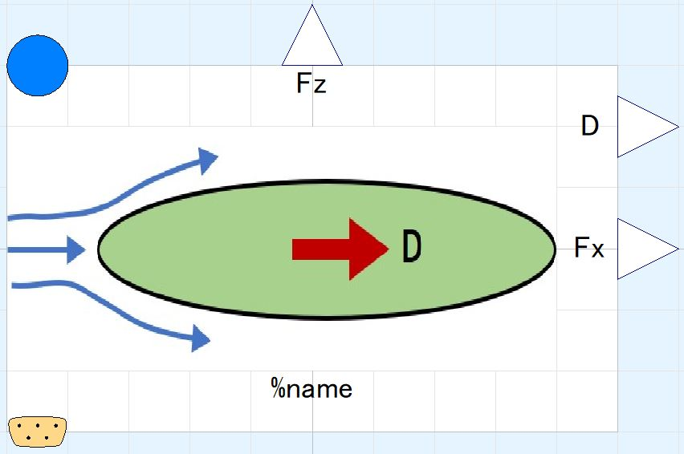
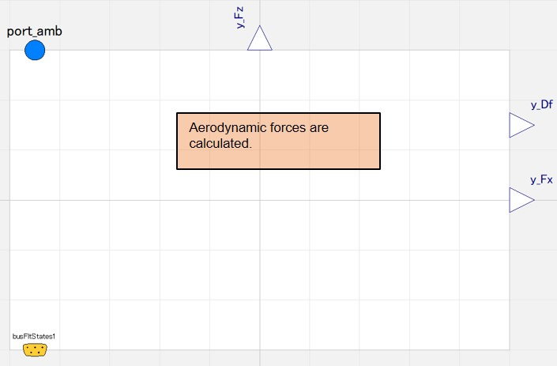
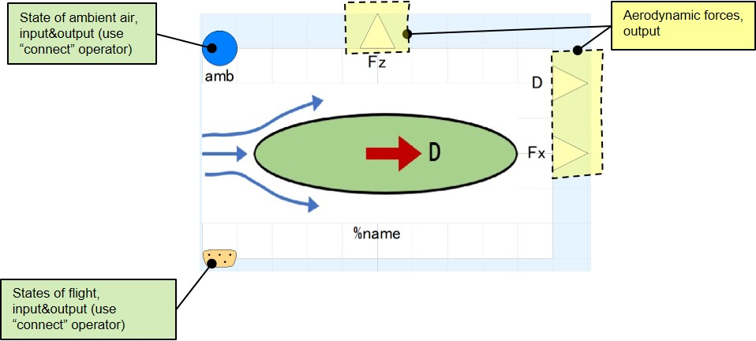

DragObjSimple00
icon:

calculates aerodynamic drag on non-lifting body.
Scope/Calculation function
- estimation of aerodynamic drag.
Short description of physical model/calculation method
- Drag is calculated from given drag coefficient, representative area, flow states, fluid properties.
- Drag is output in 2 different way.
- Drag: force along incoming flow velocity vector
- Local frame forces: forces along body's longitudinal and vertical axis, useful when angle of attack of incoming flow is large.

Limitations/Assumptions of model
- Drag coefficient must be given.
- Drag coefficient does not vary in change of flow states.
- Representative area can be area of user's choice, ex. frontal area or wetted surface area. Be consistent with definition of drag coefficient used.
Interface

Parameters
Read the descriptions on parameter window in model for details of each parameter. This section only covers parameters which requires descriptions by figures/drawings.

Usage
- redeclear the package of medium.
- fill following connectors:
- port_amb
- busFltStates1.Mn
- busFltStates1.alpha
- y_Fx (can be left unconnected)
- y_Fz (can be left unconnected)
- y_Df (can be left unconnected)
- set parameters in followings.
- "Characteristics", in "General" tab
- "Geometry", in "General" tab
Warning/Causions
none
Demo models
***** under construction *****
Equations in details
***** under construction *****
Back to index page